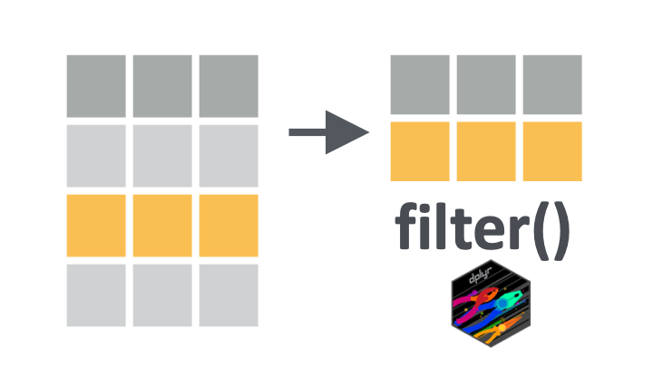
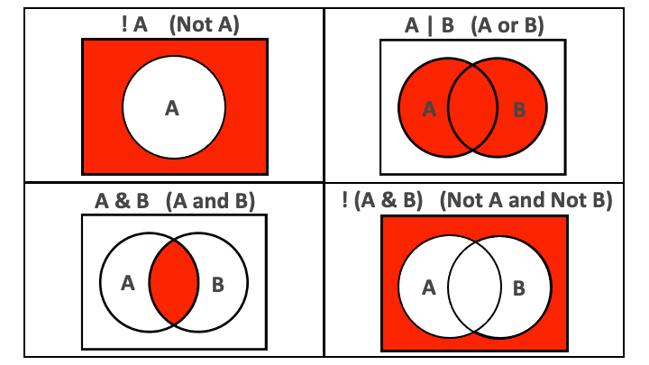

Onward with the {dplyr} package, discovering the filter verb. Last time we saw how to select variables (columns) and today we will see how to keep or drop data entries, rows, using filter. Dropping abnormal data entries or keeping subsets of your data points is another essential aspect of data wrangling.
Let’s go !

10.2 Learning objectives
You can use dplyr::filter() to keep or drop rows from a dataframe.
You can filter rows by specifying conditions on numbers or strings using relational operators like greater than (>), less than (<), equal to (==), and not equal to (!=).
You can filter rows by combining conditions using logical operators like the ampersand (&) and the vertical bar (|).
You can filter rows by negating conditions using the exclamation mark (!) logical operator.
You can filter rows with missing values using the is.na() function.
10.3 The Yaounde COVID-19 dataset
In this lesson, we will again use the data from the COVID-19 serological survey conducted in Yaounde, Cameroon.
yaounde <-read_csv(here::here('data/yaounde_data.csv'))### a smaller subset of variablesyao <- yaounde %>%select(age, sex, weight_kg, highest_education, neighborhood, occupation, is_smoker, is_pregnant, igg_result, igm_result)yao
# A tibble: 5 × 10
age sex weight_kg highest_education neighborhood occupation is_smoker
<dbl> <chr> <dbl> <chr> <chr> <chr> <chr>
1 45 Female 95 Secondary Briqueterie Informal work… Non-smok…
2 55 Male 96 University Briqueterie Salaried work… Ex-smoker
3 23 Male 74 University Briqueterie Student Smoker
4 20 Female 70 Secondary Briqueterie Student Non-smok…
5 55 Female 67 Primary Briqueterie Trader--Farmer Non-smok…
# ℹ 3 more variables: is_pregnant <chr>, igg_result <chr>, igm_result <chr>
10.4 Introducing filter()
We use filter() to keep rows that satisfy a set of conditions. Let’s take a look at a simple example. If we want to keep just the male records, we run:
yao %>%filter(sex =="Male")
# A tibble: 5 × 10
age sex weight_kg highest_education neighborhood occupation is_smoker
<dbl> <chr> <dbl> <chr> <chr> <chr> <chr>
1 55 Male 96 University Briqueterie Salaried worker Ex-smoker
2 23 Male 74 University Briqueterie Student Smoker
3 28 Male 62 Doctorate Briqueterie Student Non-smok…
4 30 Male 73 Secondary Briqueterie Trader Non-smok…
5 42 Male 71 Secondary Briqueterie Trader Ex-smoker
# ℹ 3 more variables: is_pregnant <chr>, igg_result <chr>, igm_result <chr>
Note the use of the double equal sign == rather than the single equal sign =. The == sign tests for equality, as demonstrated below:
### create the object `sex_vector` with three elementssex_vector <-c("Male", "Female", "Female")### test which elements are equal to "Male"sex_vector =="Male"
[1] TRUE FALSE FALSE
So the code yao %>% filter(sex == "Male") will keep all rows where the equality test sex == "Male" evaluates to TRUE.
It is often useful to chain filter() with nrow() to get the number of rows fulfilling a condition.
### how many respondents were male?yao %>%filter(sex =="Male") %>%nrow()
[1] 422
Key Point
The double equal sign, ==, tests for equality, while the single equals sign, =, is used for specifying values to arguments inside functions.
Practice
Filter the yao data frame to respondents who were pregnant during the survey.
How many respondents were female? (Use filter() and nrow())
10.5 Relational operators
The == operator introduced above is an example of a “relational” operator, as it tests the relation between two values. Here is a list of some of these operators:
Operator
is TRUE if
A < B
A is less than B
A <= B
A is less than or equal to B
A > B
A is greater than B
A >= B
A is greater than or equal to B
A == B
A is equal to B
A != B
A is not equal to B
A %in% B
A is an element of B

Fig: AND and OR operators visualized.
Let’s see how to use these within filter():
yao %>%filter(sex !="Male") ## keep rows where `sex` is not "Male"
From yao, keep only respondents who were children (under 18).
With %in%, keep only respondents who live in the “Tsinga” or “Messa” neighborhoods.
10.6 Combining conditions with & and |
We can pass multiple conditions to a single filter() statement separated by commas:
### keep respondents who are pregnant and are ex-smokersyao %>%filter(is_pregnant =="Yes", is_smoker =="Ex-smoker") ## only one row
# A tibble: 1 × 10
age sex weight_kg highest_education neighborhood occupation is_smoker
<dbl> <chr> <dbl> <chr> <chr> <chr> <chr>
1 25 Female 90 Secondary Carriere Home-maker Ex-smoker
# ℹ 3 more variables: is_pregnant <chr>, igg_result <chr>, igm_result <chr>
When multiple conditions are separated by a comma, they are implicitly combined with an and (&).
It is best to replace the comma with & to make this more explicit.
### same result as before, but `&` is more explicityao %>%filter(is_pregnant =="Yes"& is_smoker =="Ex-smoker")
# A tibble: 1 × 10
age sex weight_kg highest_education neighborhood occupation is_smoker
<dbl> <chr> <dbl> <chr> <chr> <chr> <chr>
1 25 Female 90 Secondary Carriere Home-maker Ex-smoker
# ℹ 3 more variables: is_pregnant <chr>, igg_result <chr>, igm_result <chr>
Side Note
Don’t confuse:
the “,” in listing several conditions in filter filter(A,B) i.e. filter based on condition A and (&) condition B
the “,” in lists c(A,B) which is listing different components of the list (and has nothing to do with the & operator)
If we want to combine conditions with an or, we use the vertical bar symbol, |.
### respondents who are pregnant OR who are ex-smokersyao %>%filter(is_pregnant =="Yes"| is_smoker =="Ex-smoker")
# A tibble: 5 × 10
age sex weight_kg highest_education neighborhood occupation is_smoker
<dbl> <chr> <dbl> <chr> <chr> <chr> <chr>
1 55 Male 96 University Briqueterie Salaried worker Ex-smoker
2 42 Male 71 Secondary Briqueterie Trader Ex-smoker
3 38 Male 71 University Briqueterie Informal worker Ex-smoker
4 69 Male 108 University Briqueterie Retired Ex-smoker
5 65 Male 93 Secondary Briqueterie Retired Ex-smoker
# ℹ 3 more variables: is_pregnant <chr>, igg_result <chr>, igm_result <chr>
Practice
Filter yao to only keep men who tested IgG positive.
Filter yao to keep both children (under 18) and anyone whose highest education is primary school.
10.7 Negating conditions with !
To negate conditions, we wrap them in !().
Below, we drop respondents who are children (less than 18 years) or who weigh less than 30kg:
### drop respondents < 18 years OR < 30 kgyao %>%filter(!(age <18| weight_kg <30))
# A tibble: 5 × 10
age sex weight_kg highest_education neighborhood occupation is_smoker
<dbl> <chr> <dbl> <chr> <chr> <chr> <chr>
1 45 Female 95 Secondary Briqueterie Informal work… Non-smok…
2 55 Male 96 University Briqueterie Salaried work… Ex-smoker
3 23 Male 74 University Briqueterie Student Smoker
4 20 Female 70 Secondary Briqueterie Student Non-smok…
5 55 Female 67 Primary Briqueterie Trader--Farmer Non-smok…
# ℹ 3 more variables: is_pregnant <chr>, igg_result <chr>, igm_result <chr>
The ! operator is also used to negate %in% since R does not have an operator for NOT in.
### drop respondents whose highest education is NOT "Primary" or "Secondary"yao %>%filter(!(highest_education %in%c("Primary", "Secondary")))
# A tibble: 5 × 10
age sex weight_kg highest_education neighborhood occupation is_smoker
<dbl> <chr> <dbl> <chr> <chr> <chr> <chr>
1 55 Male 96 University Briqueterie Salaried worker Ex-smoker
2 23 Male 74 University Briqueterie Student Smoker
3 28 Male 62 Doctorate Briqueterie Student Non-smok…
4 38 Male 71 University Briqueterie Informal worker Ex-smoker
5 54 Male 71 University Briqueterie Salaried worker Smoker
# ℹ 3 more variables: is_pregnant <chr>, igg_result <chr>, igm_result <chr>
Key Point
It is easier to read filter() statements as keep statements, to avoid confusion over whether we are filtering in or filtering out!
So the code below would read: “keep respondents who are under 18 or who weigh less than 30kg”.
yao %>%filter(age <18| weight_kg <30)
And when we wrap conditions in !(), we can then read filter() statements as drop statements.
So the code below would read: “drop respondents who are under 18 or who weigh less than 30kg”.
yao %>%filter(!(age <18| weight_kg <30))
Practice
From yao, drop respondents who live in the Tsinga or Messa neighborhoods.
10.8NA values
The relational operators introduced so far do not work with NA.
Let’s make a data subset to illustrate this.
yao_mini <- yao %>%select(sex, is_pregnant) %>%slice(1,11,50,2) ## custom row orderyao_mini
# A tibble: 4 × 2
sex is_pregnant
<chr> <chr>
1 Female No
2 Female No response
3 Female Yes
4 Male <NA>
In yao_mini, the last respondent has an NA for the is_pregnant column, because he is male.
Trying to select this row using == NA will not work.
yao_mini %>%filter(is_pregnant ==NA) ## does not work
# A tibble: 0 × 2
# ℹ 2 variables: sex <chr>, is_pregnant <chr>
yao_mini %>%filter(is_pregnant =="NA") ## does not work
# A tibble: 0 × 2
# ℹ 2 variables: sex <chr>, is_pregnant <chr>
This is because NA is a non-existent value. So R cannot evaluate whether it is “equal to” or “not equal to” anything.
The special function is.na() is therefore necessary:
### keep rows where `is_pregnant` is NAyao_mini %>%filter(is.na(is_pregnant))
# A tibble: 1 × 2
sex is_pregnant
<chr> <chr>
1 Male <NA>
This function can be negated with !:
### drop rows where `is_pregnant` is NAyao_mini %>%filter(!is.na(is_pregnant))
# A tibble: 3 × 2
sex is_pregnant
<chr> <chr>
1 Female No
2 Female No response
3 Female Yes
Side Note
For tibbles, RStudio will highlight NA values bright red to distinguish them from other values:
A common error with NA
Side Note
NA values can be identified but any other encoding such as "NA" or "NaN", which are encoded as strings, will be imperceptible to the functions (they are strings, like any others).
Practice
From the yao dataset, keep all the respondents who had missing records for the report of their smoking status.
Practice
For some respondents the respiration rate, in breaths per minute, was recorded in the respiration_frequency column.
From yaounde, drop those with a respiration frequency under 20. Think about NAs while doing this! You should avoid also dropping the NA values.
10.9 Wrap up
Now you know the two essential verbs to select() columns and to filter() rows. This way you keep the variables you are interested in by selecting your columns and you keep the data entries you judge relevant by filtering your rows.
But what about modifying, transforming your data? We will learn about this in the next lesson. See you there!